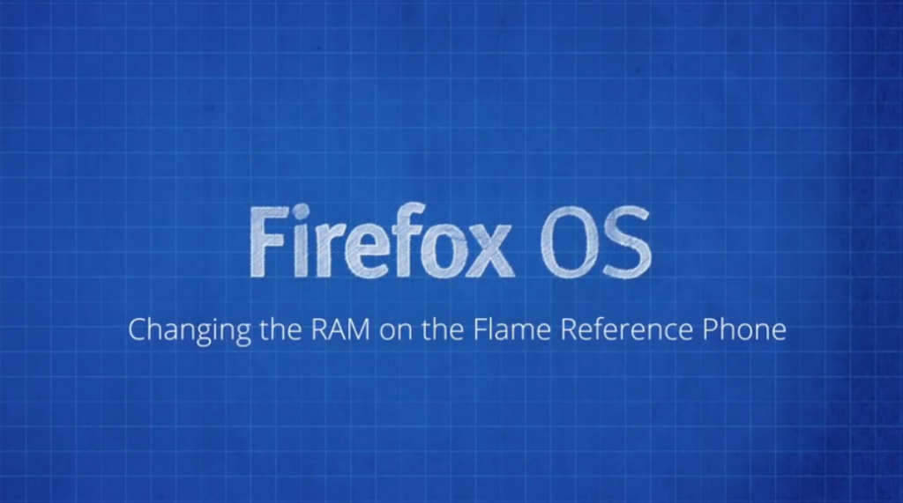

在看過《影片：透過 Flame 入門 (上)》之後，你一定不能錯過要接著介紹的兩支影片。
現在開發者已可訂購 「Flame」開發者手機，以順利進一步撰寫適用的 App。
任何人都能到 everbuying 網站線上購買 Flame，美金 $170 即包含全球運費。此款開發者手機並未與任何電信營運商綁約或鎖機，可搭配使用你手邊的任何 SIM 卡。

接著要透過《影片：透過 Flame 入門 (上)》與《(下)》兩篇文章為大家獻上 Flame 手機的四支影片 (中文字幕)，說明應如何設定 Flame 為開發者手機、如何刷進新版 Firefox OS、如何設定 RAM 容量以模擬較慢速的裝置。
但請你需事先準備：
- Flame 可用的 USB 接線
- 先行安裝 ADB 與 Fastboot 完畢。只要安裝完整的 Android 開發者套件，亦可透過下列 Windows或 Linux 與 OSX 的簡易安裝程式，均可取得並安裝 ADB/Fastboot。
變更 Flame 的 RAM 容量
Flame 本身即具備 1GB 容量的 RAM，足以應付日常作業。但目前上市的 Firefox OS 商用機並未達此容量。因此我們讓開發者能輕鬆透過 ADB 與 Fastboot 模擬較少 RAM 的初階裝置。
為 Flame 刷進新的 Firefox OS 映像檔
在大多數情況下，開發者只需讓 Flame 連上網路即可升級 Firefox OS。但如果你要隨時保持最新版本。則可輕鬆取得 Mozilla 提供的映像檔並刷機。只要透過指令列下達重新開機並執行 Shell Script 即可。
###
先說到這了，請隨時留意 Wiki 的最新資訊
希望這些影片能帶領你透過 Flame 裝置，進一步接觸 App 與 Firefox OS 相關概念。你同樣可到Flame 裝置的 Wiki 頁面上取得所有資訊，而且將隨時提供最新消息。